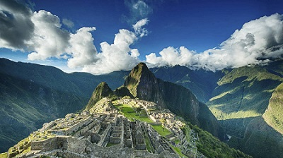
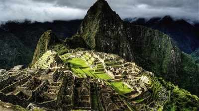
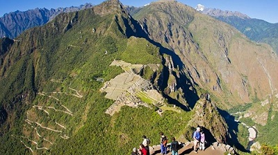

Machu Picchu
Es el nombre contemporáneo que se da a una "llaqta" antiguo poblado incaico andino, construida antes del siglo XV, ubicada en la Cordillera Oriental del sur de Perú, en la cadena montañosa de Los Andes a 2430 metros sobre el nivel del mar.
Está ubicada en la región Cusco, provincia de Urubamba, distrito de Machupicchu, sobre el Valle Sagrado de los Incas, a 80 kilómetros al noroeste de la ciudad de Cusco, ciudad del Perú y por donde fluye el río Urubamba, río que atraviesa la cordillera y se origina un cañón con clima de montaña tropical. Según muchos estudiosos su nombre original habría sido Llaqtapata.
Machu Picchu es considerada, al mismo tiempo, una obra maestra de la arquitectura y la ingeniería.4 Sus peculiares características arquitectónicas y paisajísticas.


Reconocimiento
Machu Picchu fue declarado Santuario Histórico Peruano en 1981 y está en la lista del Patrimonio de la Humanidad de la Unesco desde 1983, como parte de todo un conjunto cultural y ecológico conocido bajo la denominación Santuario histórico de Machu Picchu.
El 7 de julio de 2007 Machu Picchu fue declarada como una de las nuevas siete maravillas del mundo moderno en una ceremonia realizada en Lisboa (Portugal), que contó con la participación de cien millones de votantes en el mundo entero. Machu Picchu fue votada como una de las Nuevas Siete Maravillas del Mundo en una encuesta mundial en Internet.
Redescubrimiento
Hiram Bingham, un profesor estadounidense de historia interesado en encontrar los últimos reductos incaicos de Vilcabamba oyó sobre Lizárraga, (persona que ya había llegado antes) a partir de sus contactos con los hacendados locales. Fue así como llegó a Machu Picchu el 24 de julio de 1911 guiado por otro arrendatario de tierras, Melchor Arteaga, y acompañado por un sargento de la guardia civil peruana de apellido Carrasco.
Si bien es claro que Bingham no descubre Machu Picchu en el sentido estricto de la palabra (nadie lo hizo dado que nunca se «perdió» realmente), es indudable que tuvo el mérito de ser la primera persona en reconocer la importancia de las ruinas, estudiándolas con un equipo multidisciplinario y divulgando sus hallazgos. Ello pese a que los criterios arqueológicos empleados no fueran los más adecuados desde la perspectiva actual.
